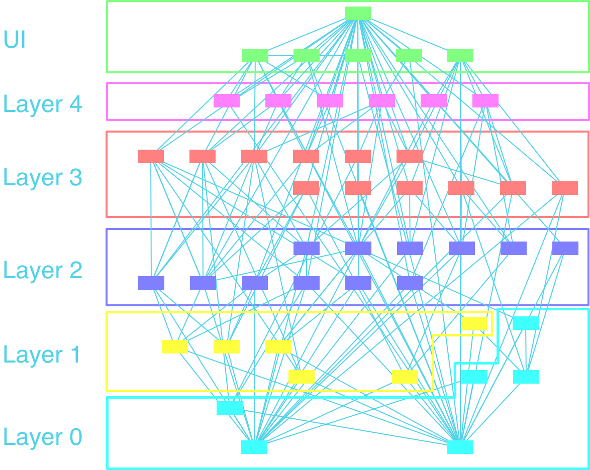
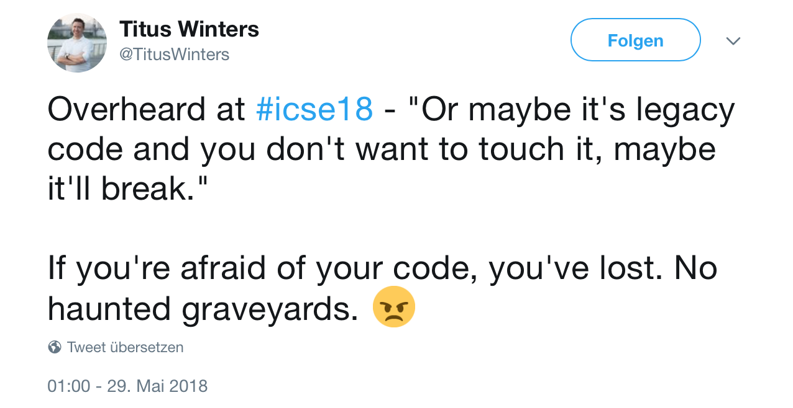

<!doctype html>
<html>
  <head>
    <meta charset="utf-8">
    <meta name="viewport" content="width=device-width, initial-scale=1.0, maximum-scale=1.0, user-scalable=no">

    <title>Tool-</title>
    <meta name="author" content="Louis Dionne">

    <link rel="stylesheet" href="reveal/css/reveal.css">
    <link rel="stylesheet" href="reveal/css/theme/moon.css">
    <link rel="stylesheet" href="custom.css">

    <!-- Theme used for syntax highlighting of code -->
    <link rel="stylesheet" href="highlight-styles/vs2015.css">

    <!-- Printing and PDF exports -->
    <script>
      var link = document.createElement( 'link' );
      link.rel = 'stylesheet';
      link.type = 'text/css';
      link.href = window.location.search.match( /print-pdf/gi ) ? 'reveal/css/print/pdf.css' : 'reveal/css/print/paper.css';
      document.getElementsByTagName( 'head' )[0].appendChild( link );
    </script>
  </head>
  <body>
    <div class="reveal">
      <div class="slides">
        <section data-markdown=""
                 data-separator="^====+$"
                 data-separator-vertical="^----+$"
                 data-notes="^Note:">
        <script type="text/template">

## Tool-based Interactive Software Parallelization: A Case Study
#### <font color="white">A. Wilhelm</font>, F. Cakaric, T. Schüle, M. Gerndt, ICSE-SEIP 2018

<br>

<span>
    
</span>

----

These slides are available at https://github.com/wilhelma/icse18-presentation

====

## 50 years of Software Engineering
### A real success story

----

### Riding on Moore's Law
<span>
    
</span>

----

### Moore's Law is Dead, what's next?
<div>
    
</div>
<font size=2>https://en.wikipedia.org/wiki/Supercomputer</font>

Note:
5 decades of SE - Moore's Law<br>
4 decades of ICSE - Adjustment<br>
Allowed: ideas, abstractions, concepts, patterns<br>
Bad news: Rate slowing down from 1 to 2 to 4 years<br>
Good news: performance still doubles every 2 years

----

### The Future Is Wild
<span>
    
</span>
<font size=2>https://www.chiprebel.com/apple-a11-bionic</font>

Note:
By far the most silicon is spent for GPU and Memory<br>
Area of Neuronal PU is as big as CPU<br>
6 different ISA's<br>
Future: 1) Eff 10% 2) Domain 3) Quantum

----

### Know your dependencies

----

### Listen to John L. Hennesey, et.al, not me
<small>https://www.acm.org/turing-award-50/video/moores-law-is-really-dead</small>

====

### Legacy code meets multi-core
<span>
    
</span><br>
<font size=2>https://www.siemens.com</font>

----

<blockquote cite="http://www.worldwildlife.org/who/index.html">
  Systems are asynchronous, distributed and event driven in nature.<br>
  This should be reflected in the language to define them and the tools to build them [...]
</blockquote>
#### Margaret Hamilton, ICSE 2018

----

### Our modus operandi
<ol>
  <li class="fragment">Identify concurrency</li>
  <li class="fragment">Redesign the software architecture</li>
  <li class="fragment">Parallelize the code</li>
  <li class="fragment">Validate and verify</li>
  <li class="fragment">Analyze the runtime</li>
</ol>

----

### High-Level Problem
<span>
    
</span>

----

### Low-Level Problem
<span>
    
</span>

----

### Solution A: Hire Ninjas

<div>
    
</div>
<font size=2>https://github.com/codewarz-ninja</font>

----

### Solution B: Use Tools

----

### Parallelization Tools
<div>
    
</div>
<ul>
  <li class="fragment strength">Very useful for *regular* code</li>
  <li class="fragment weakness">Operate on low abstraction levels</li>
</ul>

----

### Architecture Analysis Tools
<div>
    
</div>
<ul>
  <li class="fragment strength">Help to understand and evaluate</li>
  <li class="fragment weakness">Neglect dynamic aspects</li>
</ul>

----

### Parallelization requires comprehension
#### (Of the structure and the behavior)

====

<div>
    <br>
</div>

----

### Key Feature 1: Dependency analysis
<video controls>
  <source data-src="img/part1.mov" type="video/mp4" />
</video>

----

### Key Feature 2: Architecture Analysis
<video controls>
  <source data-src="img/part2.mov" type="video/mp4" />
</video>

----

### Workflow
<span>
   
</span>

----

### I will not talk about
<span>
   
</span>

----

### Software Architecture Reconstruction,<br> another try?

----

### So, you use directories?
<pre><code class="python" data-trim data-noescape>
controller := <span class="hljs-keyword">inFile</span>("/src/controller/.**")</code></pre>

----

### Or namespaces?
<pre><code class="python" data-trim data-noescape>
logic := <span class="hljs-keyword">namespace</span>("log")</code></pre>

----

### shared libraries anybody?
<pre><code class="python" data-trim data-noescape>
libs := <span class="hljs-keyword">image</span>("/3dparty/.*.so")</code></pre>

----

### All together?
<pre><code class="python" data-trim data-noescape>
operations := libs || <span class="hljs-keyword">function</span>("operate") && !logic</code></pre>

----

### Parceive helps to...
<ol>
  <li>Identify concurrency <font color="green">+++</font></li>
  <li>Redesign the software architecture <font color="green">++</font></li>
  <li>Parallelize the code <font color="red">-</font></li>
  <li>Validate and verify <font color="green">+</font></li>
  <li>Analyze the runtime <font color="red">-</font><font color="green">+</font></li>
</ol>

====

### Some final thoughts

----

### Why binary analysis?
<ul>
  <li class="fragment strength">No source code needed</li>
  <li class="fragment strength">Optimizations and generics</li>
  <li class="fragment strength">Language independent</li>
  <li class="fragment weakness">Slowdown</li>
  <li class="fragment weakness">Complex deployments</li>
</ul>

----
### The facts
<span class="fragment">**Biggest software applied:**   <font color="white">>10M loc</font></span><br>
<span class="fragment">**Supported plattforms:**   <font color="white">Linux, Windows</font></span><br>
<span class="fragment">**Supported languages:**   <font color="white">C/C++</font></span><br>
<span class="fragment">**Current state:** <font color="white">Working prototype</font></span><br>

----

### We strive for collaborations
I brought some business cards

----

### Qeustiosn?

        </script>
        </section>
      </div>
    </div>

    <script src="js/jquery-3.2.1.min.js"></script>
    <script src="reveal/js/reveal.js"></script>
    <script src="reveal/lib/js/head.min.js"></script>

    <script>
      Reveal.initialize({
        slideNumber: 'c', // 'c/t' -> useful when authoring to know how many slides there are
        history: true,
        transition: 'fast',
        keyboard: true,

        // Default settings for charts embedded in the presentation
        chart: {
          defaults: {
            global: {
              responsive: true,
              animation: null,
              title: { fontColor: "#FFF" },
              legend: {
                labels: {
                  fontColor: "#FFF",
                  fontSize: 20
                }
              }
            },
            scale: {
              scaleLabel: { fontColor: "#FFF" },
              gridLines: { color: "#FFF", zeroLineColor: "#FFF" },
              ticks: { fontColor: "#FFF" }
            }
          }
        },

        dependencies: [
          { src: 'reveal/plugin/markdown/marked.js' },
          { src: 'reveal/plugin/markdown/markdown.js' },
          { src: 'reveal/plugin/embed-tweet/embed-tweet.js' },
          { src: 'reveal/plugin/notes/notes.js', async: true },
          { src: 'reveal/plugin/highlight/highlight.js', async: true, callback: function() { hljs.initHighlightingOnLoad(); } },
          { src: 'plugin/Chart.min.js' },
          { src: 'plugin/csv2chart.js' },
          { src: 'plugin/sampler.js' }
        ]
      });

      Reveal.configure({
        keyboard: {
          13: 'next', // go to the next slide when the ENTER key is pressed
          27: function() {}, // do something custom when ESC is pressed
          32: function(){ 
              if (video.paused == true) video.play();
              else video.pause();
              }
         }
      });
    </script>
  </body>
</html>
